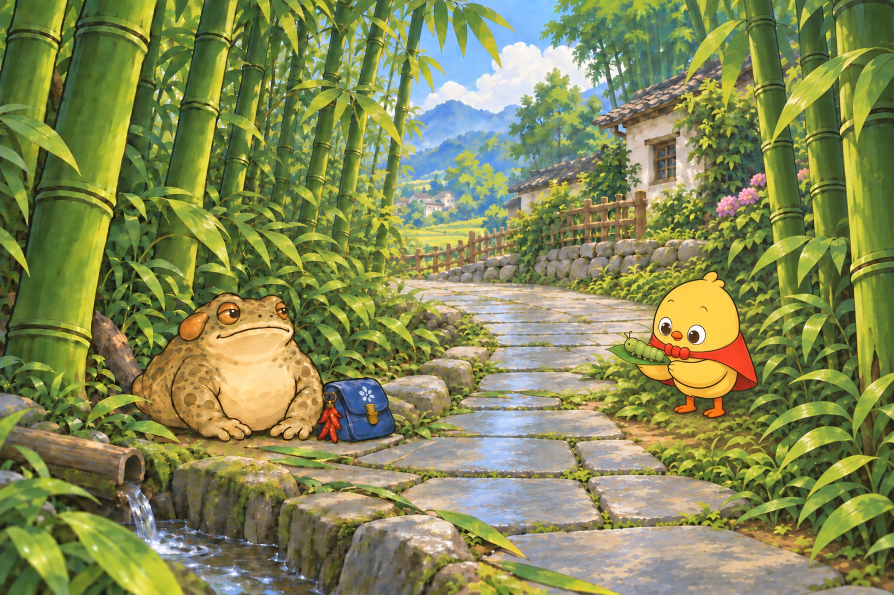

01 ／ 道明竹乡 · 叫叫彩蛋
竹林里，抓猪儿虫
竹叶沙沙响，疙宝在竹根边歇脚，看见叫叫正弯着身子抓猪儿虫。胖乎乎的绿虫趴在叶上，叫叫小心一拢，连着叶子托了起来。疙宝在凉荫里望着，没有凑过去打扰。
猪儿虫是四川话里对青虫的俗称，此处画成肉乎乎的绿色幼虫，不指定具体物种。这段竹林偶遇为虚构见闻，关联收藏品「猪儿虫」，不新增捕虫或饲养玩法。

关联收藏品 · 本地素材
猪儿虫
胖嘟嘟的一小条，伏在叶子上，慢悠悠地拱一下。
只作收藏；不加入吃食库存，不新增饲养、捕虫互动或出游条件。